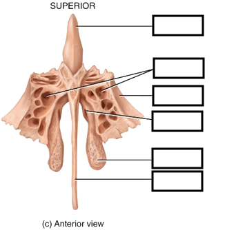

Image Hotspot Debugger
How to use:
- Replace the `src` attribute of the image below with your diagram's file path.
- Open your browser's console (F12 on Windows, Cmd+Option+I on Mac).
- Click anywhere on the image to see the coordinates logged in the console as a percentage.
